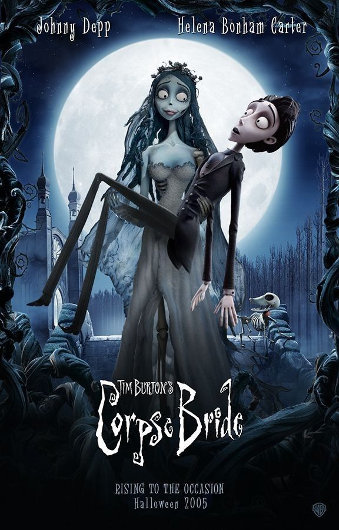
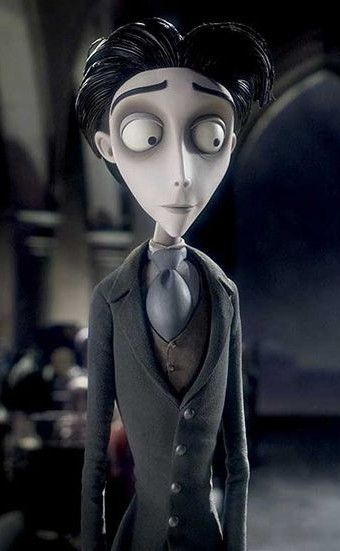
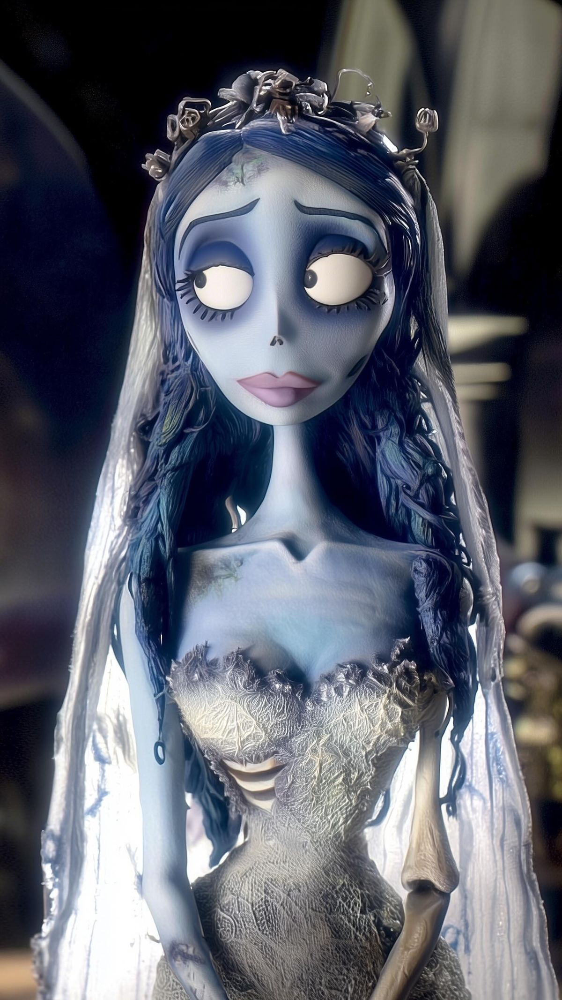
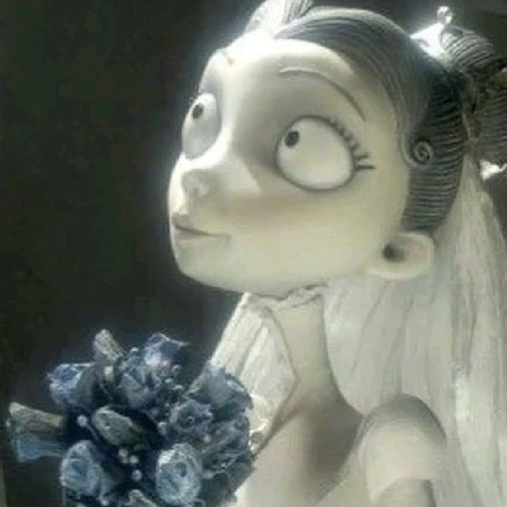
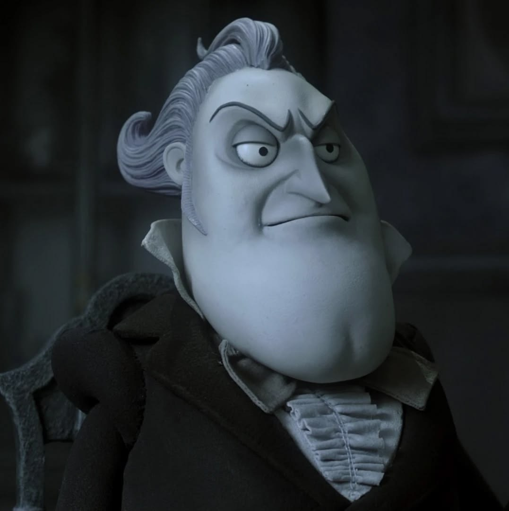

A Noiva Cadáver (2005) é um longa-metragem de animação stop-motion do gênero fantasia romântica, dirigido por Tim Burton e Mike Johnson e escrito por John August, Caroline Thompson e Pamela Pettler. Ambientado em uma vila inglesa, o filme traz Johnny Depp dublando o protagonista Victor e Helena Bonham Carter na voz de Emily. Trata-se da primeira animação em stop-motion dirigida por Burton, sucedendo seus trabalhos como produtor em O Estranho Mundo de Jack e James e o Pêssego Gigante.
Inspirado no conto folclórico judaico do século XVII "O Dedo", o projeto começou a ser trabalhado em 2003 e foi produzido simultaneamente ao filme A Fantástica Fábrica de Chocolate. A produção ocorreu no 3 Mills Studios, em Londres, utilizando câmeras digitais DSLR Canon EOS-1D Mark II. Além dos atores principais, Burton trouxe seu colaborador habitual Danny Elfman para a trilha sonora e dedicou a obra ao produtor executivo Joe Ranft, que faleceu um mês antes da estreia.
Coproduzido entre os Estados Unidos e o Reino Unido pela Tim Burton Productions e Laika Entertainment, e distribuído pela Warner Bros. Pictures, o longa estreou no 62º Festival Internacional de Cinema de Veneza. Lançado nos cinemas em setembro de 2005, A Noiva Cadáver conquistou grande sucesso de público e crítica, garantindo uma indicação ao Oscar de Melhor Filme de Animação.
Em uma vila inglesa do século XIX, Victor Van Dort e Victoria Everglot estão prestes a se casar em uma união arranjada por suas famílias — uma busca por prestígio social e a outra por dinheiro. Apesar de se apaixonarem à primeira vista, o desajeitado Victor arruina o ensaio do casamento e foge envergonhado para a floresta. Ao treinar seus votos sozinho, ele coloca a aliança em um galho seco que se revela o dedo de Emily, uma noiva assassinada que desperta de seu túmulo acreditando estar agora casada com ele e o leva para a Terra dos Mortos.
Enquanto busca uma maneira de retornar para Victoria, Victor descobre que Emily foi morta no passado por seu noivo, que roubou suas riquezas. Ele consegue enganá-la para voltar ao mundo dos vivos e reencontrar Victoria, mas Emily descobre o plano e o arrasta de volta ao submundo, sentindo-se traída. Desesperada para salvar o amado, Victoria tenta avisar seus pais sobre o ocorrido, mas eles desacreditam de sua história e a forçam a se casar com o misterioso e ostensivamente rico Lorde Barkis Bittern.
Ao saber do novo casamento de Victoria, Victor aceita o seu destino ao lado de Emily. No entanto, para que a união noiva-defunto seja válida, ele descobre que precisa tomar um veneno para morrer e se juntar a ela em definitivo. Os mortos sobem à Terra dos Vivos para realizar o casamento e acabam se reencontrando alegremente com seus parentes. No meio da confusão, Barkis revela que pretendia aplicar um golpe do baú na família de Victoria, sem saber que eles também estavam falidos.
Durante a cerimônia, Emily percebe o sacrifício de Victor e o impede de beber o veneno ao ver Victoria presente, decidindo não tirar da jovem a chance de ser feliz. Nesse momento, Barkis surge para sequestrar Victoria, e Emily reconhece nele o noivo que a assassinou. Victor luta contra o vilão para proteger Victoria, mas é Barkis quem acaba caindo em sua própria ganância: ele debocha de Emily e toma acidentalmente a taça com veneno. Ao morrer, ele fica à mercê da vingança dos espíritos do submundo. Finalmente em paz e liberta de seu tormento, Emily desfaz a promessa de casamento para que Victor e Victoria fiquem juntos, transformando-se em borboletas ao luar.

Victor Van Dort: Jovem tímido e nervoso de uma família de comerciantes de peixe que, acidentalmente, pede Emily em casamento ao ensaiar seus votos na floresta.

Emily (A Noiva-Cadáver): Uma jovem mulher assassina do passado que foi traída e morta, mas que volta à vida após os votos de Victor, sonhando com o verdadeiro amor.

Victoria Everglot: Jovem doce de uma família aristocrática falida, prometida em casamento a Victor.

Lorde Barkis Bittern: O verdadeiro vilão da história; um homem elegante e manipulador que se infiltra na alta sociedade com segundas intenções